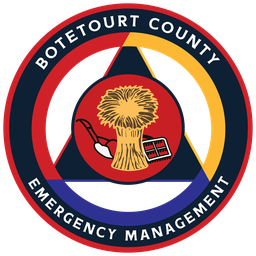

‹ BACK TO MAP
Needs a signal
ONLINE ONLY
My position
FORMAT
USNG
▾
USNG
MGRS
UTM
Lat/long – decimal degrees
Lat/long – degrees, decimal minutes
Lat/long – degrees, minutes, seconds
Coordinate format · tap to change
Finding your location…
COPY
OFFLINE APP
COPY
SHARE
Latitude, longitude
Elevation
Precision
Heading / speed
Works with no cell signal once installed: open this page while online, then
Share → Add to Home Screen
(iPhone) or
⋮ → Install app
(Android). GPS does not need a signal. Your location stays on this phone.